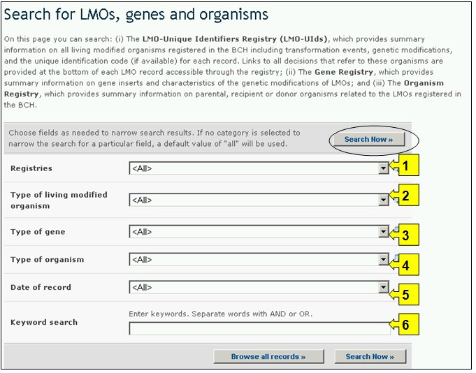
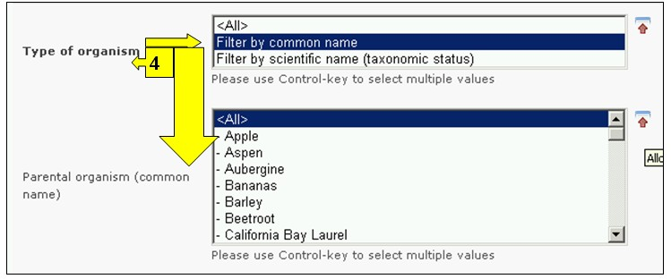
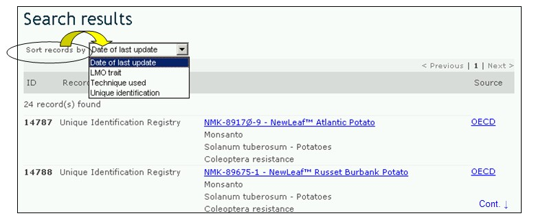

La interfase de búsqueda de información acerca de OVM, genes y organismos puede ser obtenida en el menú desplegable Búsqueda de Información en la barra de navegación, o en el vínculo en la barra lateral izquierda del menú de la página Búsqueda de Información, o en el vínculo del texto OVM, genes y organismos de la misma página
En la página Búsqueda de OVM, genes u organismos el usuario puede encontrar información en:
-
El registro de Identificadores Únicos de OVM (IU OVM), brinda información resumida de todos los organismos vivos modificados que están ingresados en el CIISB, incluidos el evento de transformación, la modificación genética y el código de identificación de cada uno (si está disponible) para cada registro. En cada registro de un OVM se proporcionan vínculos con todas las decisiones y evaluaciones de riesgo relacionadas con ese organismo;
-
El registro de genes contiene información sobre genes insertados y características de la modificación del OVM; y
-
Registro de Organismos, que brinda información resumida de organismos parentales, receptores o donantes relacionados con los OVM registrados en el CIISB.
En la página Búsqueda de OVM, genes y organismos hay seis cuadros para referenciar los criterios de búsqueda en la base de datos. Cada uno de estos tiene un menú desplegable en el que se puede seleccionar el criterio de búsqueda. La búsqueda por defecto es el primer elemento que aparece en la lista desplegada. En la parte derecha de cada cuadro, un botón le permite al usuario activar selecciones múltiples. Una vez se está en el modo de selección múltiple, es posible agregar más criterios haciendo clic en el criterio y presionando al mismo tiempo la tecla Ctrl (Control).

Hay seis cuadros con criterios de búsqueda proporcionados para afinar las búsquedas en esta base de datos.
Cuadro 1 [Registros] presenta la lista de los tres registros disponibles: OVM, Genes y Organismos Parentales o Donadores.

Cuadro 2 [Tipo de organismo vivo modificado] permite al usuario aplicar filtros con el objeto de restringir la búsqueda a los registros que están específicamente relacionados con el criterio de selección del OVM. Los filtros disponibles son los siguientes: (i) OVM, identificado generalmente con el Identificador Único (Ej. MONØØ81Ø-6), (ii) Tratamiento introducido o modificado (Ej. Tolerancia al Glifosfato), (iii) Nombre del gen (Ej. Cry1A(b)), (iv) Técnica utilizada (Ej. Mediado por Agrobacterium), (v) Organismo parental - nombre común (Ej. Maíz), (vi) Organismo parental -nombre científico (Ej. Zea mays) o (vii) Empresa solicitante – (campo de texto libre - Ej. Monsanto).
Seleccionando uno o más criterios de filtro del menú desplegable se abren cuadros de búsqueda adicionales con un menú desplegable de opciones, cada una de los cuales está relacionada con el filtro seleccionado. Es posible utilizar varios criterios de filtro usando la tecla Ctrl. (Ej. Haciendo clic en el criterio relevante mientras se oprime la tecla Ctrl.).

Cuadro 3 [Tipo de gen] permite al usuario aplicar filtros por nombre de gen y/o por características del gen, con el objeto de restringir la búsqueda de registros solamente a aquellos que están específicamente relacionados con el criterio de búsqueda.
Seleccionando uno o más criterios de filtro del menú desplegable se abren cuadros de búsqueda adicionales con un menú desplegable de opciones, cada una de los cuales está relacionada con el filtro seleccionado. Es posible utilizar múltiples filtros usando la tecla Ctrl. (Ej. Haciendo clic en el criterio relevante mientras se oprime la tecla Ctrl).

Cuadro 4 [Tipo de organismo] permite al usuario aplicar filtros por nombre común y/o por nombre científico, con el objeto de restringir la búsqueda de registros solamente a aquellos que están específicamente relacionados con el criterio de búsqueda.
Seleccionando uno o más criterios de filtro del menú desplegable se abren cuadros de búsqueda adicionales con un menú desplegable de opciones, cada una de los cuales está relacionada con el filtro seleccionado. Es posible utilizar múltiples filtros usando la tecla Ctrl. (Ej. Haciendo clic en el criterio relevante mientras se oprime la tecla Ctrl).

Cuadro 5 [Fecha del registro] permite al usuario que limite la búsqueda de acuerdo con la fecha en la que el registro ha sido ingresado al CIISB. El menú desplegable proporciona un número de opciones para limitar la búsqueda solamente a aquellos registros que han sido enviados dentro del período de tiempo seleccionado (Ej: ‘último día’, ‘último mes’, ‘último año’, etc.).

Cuadro 6 [Búsqueda por palabras clave] brinda la oportunidad de utilizar palabras clave para restringir la búsqueda. El usuario puede utilizar la sintaxis estándar de palabras clave (combinación de los operadores Y/O) para buscar con múltiples palabras, o partes de palabras (Ej. “Importación O Exportación”) . La búsqueda con palabras clave permite obtener solamente registros que contengan el texto exacto y no sinónimos que no hayan sido insertados (Ej: Una búsqueda con la palabra clave “Maíz” producirá una lista de registros que contienen la palabra “Maíz” pero no los registros que contengan “Zea mays”).

La página de búsqueda ofrece tres botones para obtener la lista de registros. El botón Busque Ahora (tanto en la parte superior como inferior de la interfase de búsqueda) permite al usuario activar una búsqueda basada en los criterios seleccionados en los cuadros de la tabla de búsqueda. Los resultados de búsqueda son ordenados alfabéticamente, por defecto, de acuerdo con el nombre de país. El botón Busque todos los registros (en la parte inferior de la interfase de búsqueda) permite al usuario obtener una lista de todos los registros en esta base de datos.

Las páginas de Resultados de Búsqueda poseen una ventana de ordenamiento arriba de la lista de los registros encontrados. Esta puede utilizarse para ordenar los registros de acuerdo con criterios específicos para esa categoría de información. Observe que los resultados cambiarán cuando el usuario ajusta los criterios de búsqueda.

Ejemplo. Un usuario desea encontrar todas las modificaciones de canola producidas por BASF que mejoran la degradación del fitato. El usuario: (i) selecciona Filtre por solicitante en el cuadro Tipo de OVM y BASF en el cuadro de Solicitante; (ii) luego el usuario selecciona Filtre por característica en el cuadro Tipo de gen y degradación de fitato en el cuadro Características Modificadas o Introducidas; y (iii) selecciona la opción Filtre por nombre común en el cuadro Tipo de organismos y selecciona Colza en el cuadro Organismo Parental.
Activando el botón Busque Ahora se obtienen los resultados de la búsqueda. Los resultados de la búsqueda se muestran como una lista de registros. La información detallada de cada OVM puede obtenerse seleccionando el título de cada registro.